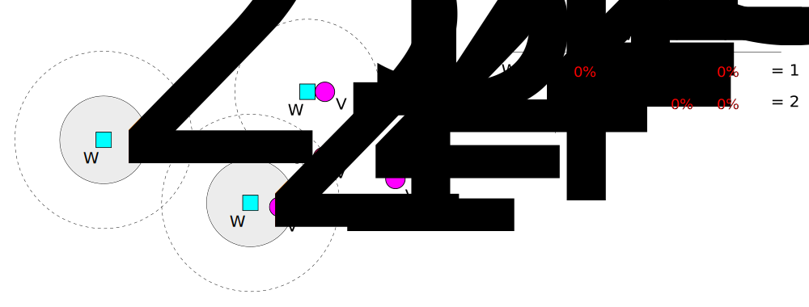

WTA, Weapon target assignment
There are a number kinds of weapons and targets.
Suppose there are \(W_{i}\) available weapons of type \(i\) , for \( i = 1, ... , m\).
Similarly, there are \(V_{j}\) targets of type \(j\) , for \( j = 1, ... , n\).
Any of the weapons can be assigned to any target.
In addition, type \(i\) weapon has a probability of destroying type \(j\) target,
and the probability is given by \(p_{ij}\).
The WTA problem is often formulated as the following nonlinear integer programming problem:
subject to the constraints
Where the variable \(x_{ij}\) represents the number of that weapons of type \(i\) assign to targets of type \(j\).
There are some different views between original problem and our battle.
In order to adapt previous problem to the situation in our battle, we need to modify the object function and constraints.
\(p_{ij}\) denote the degree of injury, a certain ratio, when type \(i\) weapon attack type \(j\) target.
Every unit of enemy are a kind of type target, and we define the value of type \(j\) target to its remainder-life-ratio.
On the other hand, we need add the concept of aggressivity of targets to object function.
So, we also need a value damage-density, damage per unit time. The damage-density of type \(j\) target denoted by \(dd_{j}\).
After modifying our WTA problem, we obtain a new linear integer programming problem:
subject to
More stringent constraints
Note : The effect of the value \(SomeRatio\) is for avoiding \(V_{j}-\sum_{i=1}^{m}p_{ij}x_{ij}\) become a negative large-number.
If a battle breaks out at this very moment.
We have 6 marines, 3 firebats and 1 goliath and enemy has 5 zerglings and 3 hydralisk. More information is showed by following table:
| Weapon Type | \(Zergling\) \(V_{1} = 30\%\) | \(Zergling\) \(V_{2} = 50\%\) | \(Zergling\) \(V_{3} = 80\%\) | \(Zergling\) \(V_{4} = 45\%\) | \(Zergling\) \(V_{5} = 100\%\) |
\(Hydralisk\) \(V_{6} = 100\%\) | \(Hydralisk\) \(V_{7} = 90\%\) | \(Hydralisk\) \(V_{8} = 25\%\) |
|---|---|---|---|---|---|---|---|---|
| \(Marine \) \(W_{1} = 6 \) | 17.1% | 17.1% | 17.1% | 17.1% | 17.1% | 7.5% | 7.5% | 7.5% |
| \(Firebat \) \(W_{2} = 3 \) | 45.7% | 45.7% | 45.7% | 45.7% | 45.7% | 20.0% | 20.0% | 20.0% |
| \(Goliath \) \(W_{3} = 1 \) | 28.6% | 28.6% | 28.6% | 28.6% | 28.6% | 12.5% | 12.5% | 12.5% |
And suppose \(dd_{1} = 5 ,\ dd_{2} = 8 \)
We have,
subject to
Then, we can use branch and bound method to solve this problem.
There are some informations that we have but not considered, for example :
We want to determine the value of \(SomeRatio_{j}\), and consider the distance. 